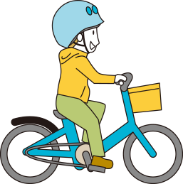

au損保は、すべての
自転車向け保険に
ヘルメット着用中補償をセット。（ヘルメット着用中死亡特別保険金補償特約）
ヘルメットを着用して自転車搭乗中に死亡した場合、
死亡保険金とは別に、１００万円をお支払いします。
２０１７年２月１６日（木）以降保険開始分から補償を開始。すでにご契約のお客さまは継続のご契約から補償追加となります。


H21〜23年の自転車死亡事故
損傷主部位の割合
（出典：公益財団法人 交通事故総合分析センター
｢交通事故分析レポートvol.97｣）
自転車事故による死亡者は、
主に頭部を損傷。
どこよりもまず頭部を
ヘルメットで守る必要があります。だから
ヘルメットを正しく着用することにより、
自転車事故での
頭部損傷による死亡の割合は
およそ1/4に減ります。
H19〜23年の頭部損傷による
自転車事故死亡者割合
ヘルメット着用比較
（出典：公益財団法人 交通事故総合分析センター
｢交通事故分析レポートVol.97｣）
※事故の衝撃でヘルメットが外れないよう正しく着用した場合
H19〜23年の頭部損傷による
自転車事故死亡者割合 ヘルメット着用比較
（出典：公益財団法人 交通事故総合分析センター
｢交通事故分析レポートVol.97｣）
ヘルメットを着用すれば
自転車事故での
死亡リスクを減らすことができます。つまり
ママもパパも！お子さまのお手本としてしっかりヘルメットを着用しましょう。

お子さまはもちろん！幼児・児童（12才以下）は、道路交通法によりヘルメットの着用努力義務が課されています。
学生さんも！通学などで自転車を頻繁に使う場合はヘルメットが必需品です。
シニアの
みなさまも！自転車乗用中の交通事故死者数のうち65才以上の方の割合が約7割！※
万が一のときのために、自分をしっかり守りましょう。
※警察庁交通局「平成27年における
交通事故の発生状況」を基に算出。
より多くのみなさまに、
ヘルメットの着用によって
自転車事故から身を守って欲しい。
それでも死亡リスクをゼロにはできません。
だから、ヘルメットを着用する方に向けた補償を考えてみました!!
追加保険料なし！
au損保は、すべての
自転車向け保険に
ヘルメット着用中補償をセット。（ヘルメット着用中死亡特別保険金補償特約）
ヘルメットを着用して自転車搭乗中に死亡した場合、
死亡保険金とは別に、１００万円をお支払いします。
２０１７年２月１６日（木）以降保険開始分から補償を開始。すでにご契約のお客さまは継続のご契約から補償追加となります。
au損保の自転車向け保険を、
くわしく知りたい方はこちら
「自転車向け保険を通じたCSR活動について」
詳しくはこちら＞＞
au損保は、全国の各自治体と｢自転車の安全利用に向けた協定｣を締結し、
自転車搭乗中のヘルメットの着用を推進しています。
Ｂ16Ｄ310417[1611]

 閉じる
閉じる